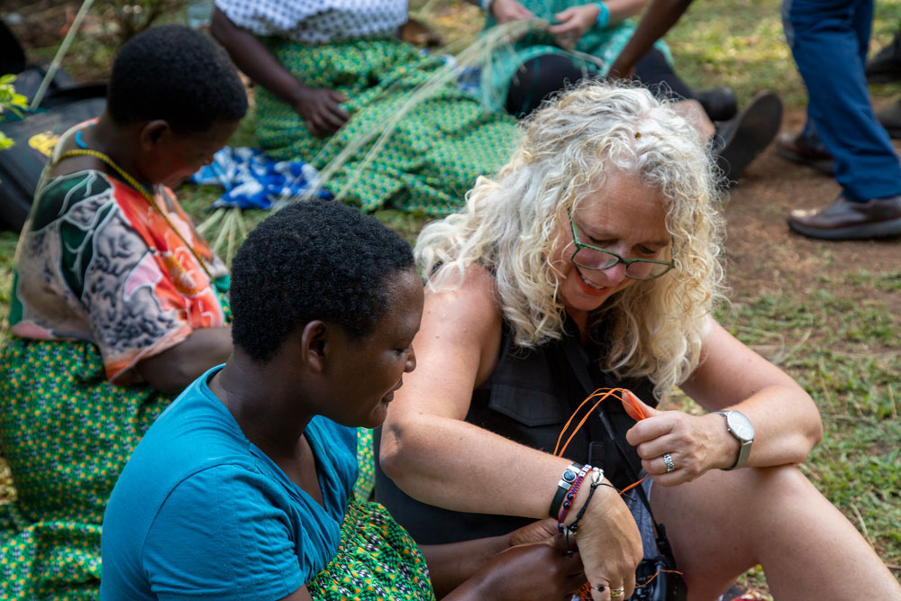
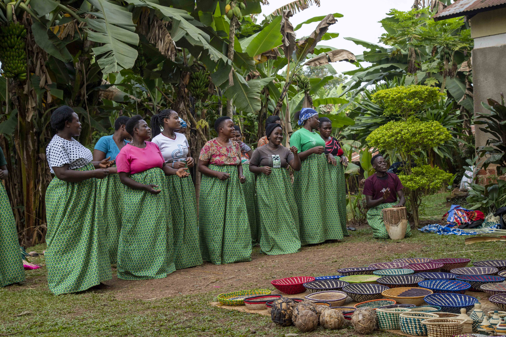
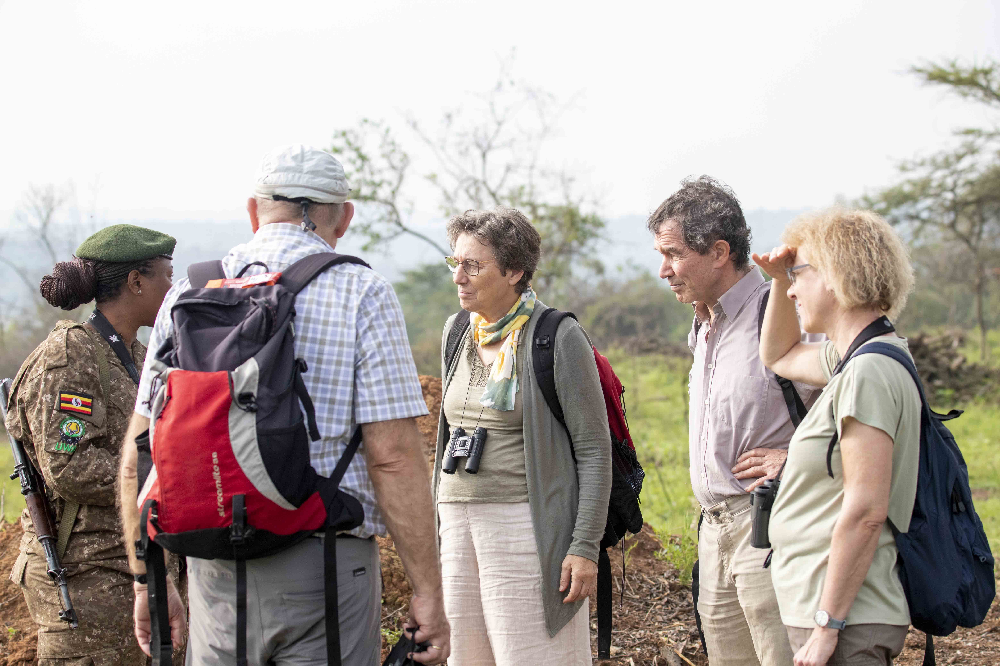
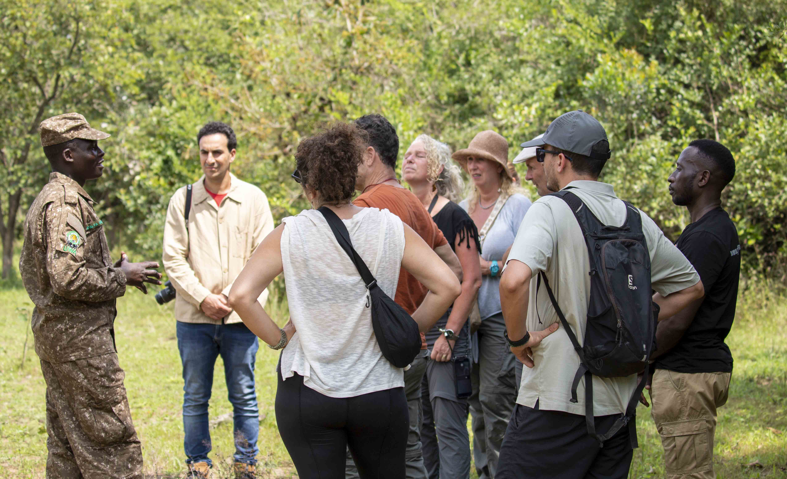

Activity Details
At Gari Trips Uganda, we champion community-based tourism. Our safaris create jobs for local guides, lodge staff, and conservation teams—keeping tourism income in Uganda, Rwanda, Kenya, and Tanzania.

We invest in education, healthcare, and anti-poaching efforts—building a sustainable future where people and wildlife thrive together.

Respect for culture drives our tours. We highlight traditional crafts, music, and storytelling—giving travelers authentic East African experiences while safeguarding heritage. Every safari empowers communities.

Things to Expect When Visiting East African Communities
- Warm Hospitality – Experience genuine welcomes from local families and village elders. 
- Vibrant Culture – Enjoy traditional dances, beadwork, and oral storytelling. 
- Community-Led Conservation – Support villages protecting gorillas, elephants, and forests.
- Handmade Souvenirs – Buy ethically crafted baskets, carvings, and textiles directly from artisans.
- Shared Meals – Savor ugali, matooke, or nyama choma in a true communal setting.